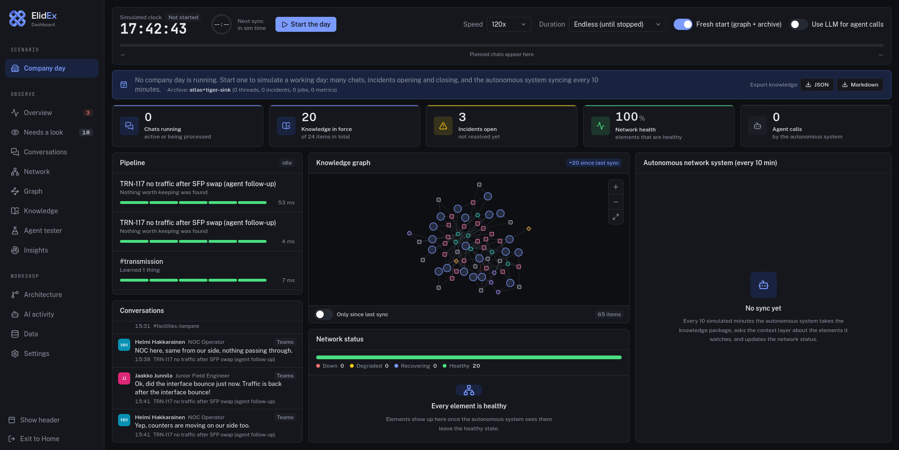

Hidden knowledge? No thank you!
Bilal Vandenberge · Manuel Rocca · Haluk Yilmaz · Matteo Morbée
Turn conversations into context an agent can use.

Filter human messages, resolve the author and role, and map messages to threads.
Wait for the thread to go quiet, then launch a locked pipeline job.
Read the full thread and extract structured operational rules and facts.
Check that quotes exist; review scope and support, then keep, downgrade or reject.
Verify speaker and inventory matches; bind target, observation and trigger, or abstain.
Retract stale thread results; merge matching knowledge or store a new assertion.
Compare nearby rules; record support, conflict or supersession and close covered rules.
Link assertions to source messages, people, equipment, classes, sites and lifecycle.
Make specialist knowledge available
at the moment an agent needs it.
Ready for any agentic operations
We'd love to continue the project.
TEAM: The Trappists · Since AI Hackathon 2026